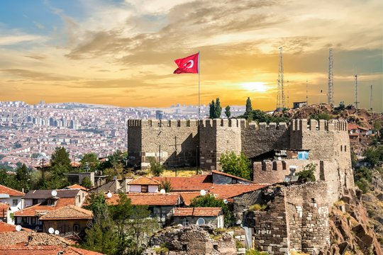

Ankara Kalesi, Türkiye'nin başkenti Ankara'nın merkezinde yer alan tarihi bir kaledir. Kale, Ankara'nın simgelerinden biri olarak bilinir ve şehrin tarihine tanıklık etmektedir. Yapım tarihi kesin olarak bilinmemekle birlikte, M.Ö. 2. yüzyıla kadar uzandığı tahmin edilmektedir.
Ankara Kalesi, ortaçağ döneminde Bizans, Selçuklu ve Osmanlı dönemlerinde önemli bir savunma merkezi olarak kullanılmıştır. Kale, stratejik konumu nedeniyle şehri çepeçevre saran surlarla çevrilidir. Bu surlar, dönemin savunma mimarisinin güzel örneklerindendir.
Ankara Kalesi'nin en dikkat çekici özelliklerinden biri, şehrin yüksek bir noktasında yer almasıdır. Bu sayede kale, çevredeki manzarayı kuşbakışı görmek için mükemmel bir konumdadır. Ankara Kalesi'nden şehrin panoramik manzarasını izlemek, ziyaretçiler için unutulmaz bir deneyimdir.
Kalenin içinde bulunan Hisar Kapısı ve İç Kale, ziyaretçilerin en ilgi çeken noktalarıdır. Ayrıca kale içinde çeşitli tarihi yapılar, camiler ve eski evler de bulunmaktadır. Ankara Kalesi, ziyaretçilere şehrin tarihini ve kültürünü daha yakından tanıma fırsatı sunar.
